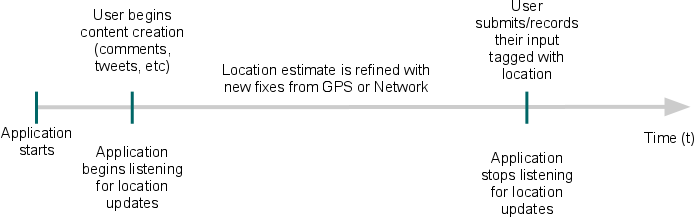
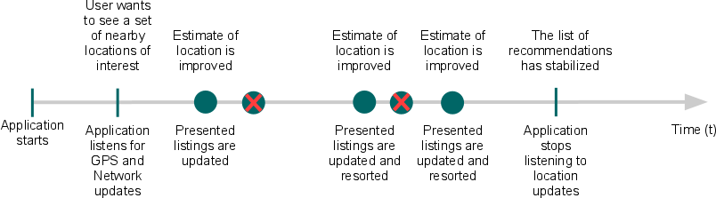

Note: The strategies described in this guide apply to the platform location
API in android.location. The Google Location Services API, part of Google Play
Services, provides a more powerful, high-level framework that automatically handles location
providers, user movement, and location accuracy. It also handles
location update scheduling based on power consumption parameters you provide. In most cases,
you'll get better battery performance, as well as more appropriate accuracy, by using the
Location Services API.
To learn more about the Location Services API, see Google Location Services for Android.
Knowing where the user is allows your application to be smarter and deliver better information to the user. When developing a location-aware application for Android, you can utilize GPS and Android's Network Location Provider to acquire the user location. Although GPS is most accurate, it only works outdoors, it quickly consumes battery power, and doesn't return the location as quickly as users want. Android's Network Location Provider determines user location using cell tower and Wi-Fi signals, providing location information in a way that works indoors and outdoors, responds faster, and uses less battery power. To obtain the user location in your application, you can use both GPS and the Network Location Provider, or just one.
Challenges in Determining User Location
Obtaining user location from a mobile device can be complicated. There are several reasons why a location reading (regardless of the source) can contain errors and be inaccurate. Some sources of error in the user location include:
- Multitude of location sources
GPS, Cell-ID, and Wi-Fi can each provide a clue to users location. Determining which to use and trust is a matter of trade-offs in accuracy, speed, and battery-efficiency.
- User movement
Because the user location changes, you must account for movement by re-estimating user location every so often.
- Varying accuracy
Location estimates coming from each location source are not consistent in their accuracy. A location obtained 10 seconds ago from one source might be more accurate than the newest location from another or same source.
These problems can make it difficult to obtain a reliable user location reading. This document provides information to help you meet these challenges to obtain a reliable location reading. It also provides ideas that you can use in your application to provide the user with an accurate and responsive geo-location experience.
Requesting Location Updates
Before addressing some of the location errors described above, here is an introduction to how you can obtain user location on Android.
Getting user location in Android works by means of callback. You indicate that you'd
like to receive location updates from the LocationManager ("Location
Manager") by calling requestLocationUpdates(), passing it a
LocationListener. Your LocationListener must
implement several callback methods that the Location Manager calls when the user location
changes or when the status of the service changes.
For example, the following code shows how to define a LocationListener
and request location updates:
// Acquire a reference to the system Location Manager
LocationManager locationManager = (LocationManager) this.getSystemService(Context.LOCATION_SERVICE);
// Define a listener that responds to location updates
LocationListener locationListener = new LocationListener() {
public void onLocationChanged(Location location) {
// Called when a new location is found by the network location provider.
makeUseOfNewLocation(location);
}
public void onStatusChanged(String provider, int status, Bundle extras) {}
public void onProviderEnabled(String provider) {}
public void onProviderDisabled(String provider) {}
};
// Register the listener with the Location Manager to receive location updates
locationManager.requestLocationUpdates(LocationManager.NETWORK_PROVIDER, 0, 0, locationListener);
The first parameter in requestLocationUpdates() is the type of
location provider to use (in this case, the Network Location Provider for cell tower and Wi-Fi
based location). You can control the frequency at which your listener receives updates
with the second and third parameter—the second is the minimum time interval between
notifications and the third is the minimum change in distance between notifications—setting
both to zero requests location notifications as frequently as possible. The last parameter is your
LocationListener, which receives callbacks for location updates.
To request location updates from the GPS provider,
substitute GPS_PROVIDER for NETWORK_PROVIDER. You can also request
location updates from both the GPS and the Network Location Provider by calling requestLocationUpdates() twice—once
for NETWORK_PROVIDER and once for GPS_PROVIDER.
Requesting User Permissions
In order to receive location updates from NETWORK_PROVIDER or
GPS_PROVIDER, you must request user permission by declaring either the ACCESS_COARSE_LOCATION or ACCESS_FINE_LOCATION permission, respectively, in your Android
manifest file. For example:
<manifest ... >
<uses-permission android:name="android.permission.ACCESS_FINE_LOCATION" />
...
</manifest>
Without these permissions, your application will fail at runtime when requesting location updates.
Note: If you are using both NETWORK_PROVIDER and
GPS_PROVIDER, then you need to request only the ACCESS_FINE_LOCATION
permission, because it includes permission for both providers. (Permission for ACCESS_COARSE_LOCATION includes permission only for NETWORK_PROVIDER.)
Defining a Model for the Best Performance
Location-based applications are now commonplace, but due to the less than optimal accuracy, user movement, the multitude of methods to obtain the location, and the desire to conserve battery, getting user location is complicated. To overcome the obstacles of obtaining a good user location while preserving battery power, you must define a consistent model that specifies how your application obtains the user location. This model includes when you start and stop listening for updates and when to use cached location data.
Flow for obtaining user location
Here's the typical flow of procedures for obtaining the user location:
- Start application.
- Sometime later, start listening for updates from desired location providers.
- Maintain a "current best estimate" of location by filtering out new, but less accurate fixes.
- Stop listening for location updates.
- Take advantage of the last best location estimate.
Figure 1 demonstrates this model in a timeline that visualizes the period in which an application is listening for location updates and the events that occur during that time.

Figure 1. A timeline representing the window in which an application listens for location updates.
This model of a window—during which location updates are received—frames many of the decisions you need to make when adding location-based services to your application.
Deciding when to start listening for updates
You might want to start listening for location updates as soon as your application starts, or only after users activate a certain feature. Be aware that long windows of listening for location fixes can consume a lot of battery power, but short periods might not allow for sufficient accuracy.
As demonstrated above, you can begin listening for updates by calling requestLocationUpdates():
String locationProvider = LocationManager.NETWORK_PROVIDER; // Or, use GPS location data: // String locationProvider = LocationManager.GPS_PROVIDER; locationManager.requestLocationUpdates(locationProvider, 0, 0, locationListener);
Getting a fast fix with the last known location
The time it takes for your location listener to receive the first location fix is often too
long for users wait. Until a more accurate location is provided to your location listener, you
should utilize a cached location by calling getLastKnownLocation(String):
String locationProvider = LocationManager.NETWORK_PROVIDER; // Or use LocationManager.GPS_PROVIDER Location lastKnownLocation = locationManager.getLastKnownLocation(locationProvider);
Deciding when to stop listening for updates
The logic of deciding when new fixes are no longer necessary might range from very simple to
very complex depending on your application. A short gap between when the location is acquired and
when the location is used, improves the accuracy of the estimate. Always beware that listening for a
long time consumes a lot of battery power, so as soon as you have the information you need, you
should stop
listening for updates by calling removeUpdates(PendingIntent):
// Remove the listener you previously added locationManager.removeUpdates(locationListener);
Maintaining a current best estimate
You might expect that the most recent location fix is the most accurate. However, because the accuracy of a location fix varies, the most recent fix is not always the best. You should include logic for choosing location fixes based on several criteria. The criteria also varies depending on the use-cases of the application and field testing.
Here are a few steps you can take to validate the accuracy of a location fix:
- Check if the location retrieved is significantly newer than the previous estimate.
- Check if the accuracy claimed by the location is better or worse than the previous estimate.
- Check which provider the new location is from and determine if you trust it more.
An elaborate example of this logic can look something like this:
private static final int TWO_MINUTES = 1000 * 60 * 2;
/** Determines whether one Location reading is better than the current Location fix
* @param location The new Location that you want to evaluate
* @param currentBestLocation The current Location fix, to which you want to compare the new one
*/
protected boolean isBetterLocation(Location location, Location currentBestLocation) {
if (currentBestLocation == null) {
// A new location is always better than no location
return true;
}
// Check whether the new location fix is newer or older
long timeDelta = location.getTime() - currentBestLocation.getTime();
boolean isSignificantlyNewer = timeDelta > TWO_MINUTES;
boolean isSignificantlyOlder = timeDelta < -TWO_MINUTES;
boolean isNewer = timeDelta > 0;
// If it's been more than two minutes since the current location, use the new location
// because the user has likely moved
if (isSignificantlyNewer) {
return true;
// If the new location is more than two minutes older, it must be worse
} else if (isSignificantlyOlder) {
return false;
}
// Check whether the new location fix is more or less accurate
int accuracyDelta = (int) (location.getAccuracy() - currentBestLocation.getAccuracy());
boolean isLessAccurate = accuracyDelta > 0;
boolean isMoreAccurate = accuracyDelta < 0;
boolean isSignificantlyLessAccurate = accuracyDelta > 200;
// Check if the old and new location are from the same provider
boolean isFromSameProvider = isSameProvider(location.getProvider(),
currentBestLocation.getProvider());
// Determine location quality using a combination of timeliness and accuracy
if (isMoreAccurate) {
return true;
} else if (isNewer && !isLessAccurate) {
return true;
} else if (isNewer && !isSignificantlyLessAccurate && isFromSameProvider) {
return true;
}
return false;
}
/** Checks whether two providers are the same */
private boolean isSameProvider(String provider1, String provider2) {
if (provider1 == null) {
return provider2 == null;
}
return provider1.equals(provider2);
}
Adjusting the model to save battery and data exchange
As you test your application, you might find that your model for providing good location and good performance needs some adjustment. Here are some things you might change to find a good balance between the two.
Reduce the size of the window
A smaller window in which you listen for location updates means less interaction with GPS and network location services, thus, preserving battery life. But it also allows for fewer locations from which to choose a best estimate.
Set the location providers to return updates less frequently
Reducing the rate at which new updates appear during the window can also improve battery
efficiency, but at the cost of accuracy. The value of the trade-off depends on how your
application is used. You can reduce the rate of updates by increasing the parameters in requestLocationUpdates() that specify the
interval time and minimum distance change.
Restrict a set of providers
Depending on the environment where your application is used or the desired level of accuracy, you might choose to use only the Network Location Provider or only GPS, instead of both. Interacting with only one of the services reduces battery usage at a potential cost of accuracy.
Common application cases
There are many reasons you might want to obtain the user location in your application. Below are a couple scenarios in which you can use the user location to enrich your application. Each scenario also describes good practices for when you should start and stop listening for the location, in order to get a good reading and help preserve battery life.
Tagging user-created content with a location
You might be creating an application where user-created content is tagged with a location. Think of users sharing their local experiences, posting a review for a restaurant, or recording some content that can be augmented with their current location. A model of how this interaction might happen, with respect to the location services, is visualized in figure 2.
Figure 2. A timeline representing the window in which the user location is obtained and listening stops when the user consumes the current location.
This lines up with the previous model of how user location is obtained in code (figure 1). For best location accuracy, you might choose to start listening for location updates when users begin creating the content or even when the application starts, then stop listening for updates when content is ready to be posted or recorded. You might need to consider how long a typical task of creating the content takes and judge if this duration allows for efficient collection of a location estimate.
Helping the user decide on where to go
You might be creating an application that attempts to provide users with a set of options about where to go. For example, you're looking to provide a list of nearby restaurants, stores, and entertainment and the order of recommendations changes depending on the user location.
To accommodate such a flow, you might choose to:
- Rearrange recommendations when a new best estimate is obtained
- Stop listening for updates if the order of recommendations has stabilized
This kind of model is visualized in figure 3.
Figure 3. A timeline representing the window in which a dynamic set of data is updated each time the user location updates.
Providing Mock Location Data
As you develop your application, you'll certainly need to test how well your model for obtaining user location works. This is most easily done using a real Android-powered device. If, however, you don't have a device, you can still test your location-based features by mocking location data in the Android emulator. There are three different ways to send your application mock location data: using Eclipse, DDMS, or the "geo" command in the emulator console.
Note: Providing mock location data is injected as GPS location
data, so you must request location updates from GPS_PROVIDER in order for mock location
data to work.
Using Eclipse
Select Window > Show View > Other > Emulator Control.
In the Emulator Control panel, enter GPS coordinates under Location Controls as individual lat/long coordinates, with a GPX file for route playback, or a KML file for multiple place marks. (Be sure that you have a device selected in the Devices panel—available from Window > Show View > Other > Devices.)
Using DDMS
With the DDMS tool, you can simulate location data a few different ways:
- Manually send individual longitude/latitude coordinates to the device.
- Use a GPX file describing a route for playback to the device.
- Use a KML file describing individual place marks for sequenced playback to the device.
For more information on using DDMS to spoof location data, see Using DDMS.
Using the "geo" command in the emulator console
To send mock location data from the command line:
- Launch your application in the Android emulator and open a terminal/console in your SDK's
/toolsdirectory. - Connect to the emulator console:
telnet localhost <console-port>
- Send the location data:
geo fixto send a fixed geo-location.This command accepts a longitude and latitude in decimal degrees, and an optional altitude in meters. For example:
geo fix -121.45356 46.51119 4392
geo nmeato send an NMEA 0183 sentence.This command accepts a single NMEA sentence of type '$GPGGA' (fix data) or '$GPRMC' (transit data). For example:
geo nmea $GPRMC,081836,A,3751.65,S,14507.36,E,000.0,360.0,130998,011.3,E*62
For information about how to connect to the emulator console, see Using the Emulator Console.